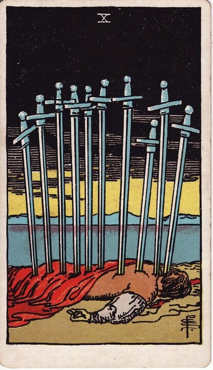

Minor Arcana · Suit of Swords
Ten of Swords Tarot Card Meaning
The Ten of Swords is rock bottom with a sunrise behind it - a painful ending, and the worst already over. Want to know what it means in your spread? Every reader on our line is hand-vetted - connect in under 60 seconds, $1 for your first minute, hang up anytime.
- Hand-vetted readers
- Available 24/7
- Hang up anytime

Ten of Swords - What It Shows
A figure lies face-down with ten swords in his back under a black sky - but on the horizon, a golden sun is rising. It's the most dramatic "rock bottom" image in the deck, deliberately over-the-top. After the dread of the Nine, the Ten is the feared thing actually happening - and the quiet relief that comes with it: it can't get worse from here, and the dawn is already breaking.
Ten of Swords Upright Meaning
Upright, the Ten of Swords is a painful ending, betrayal, defeat, or rock bottom. It hurts - and it's also over. The melodrama of ten swords is intentional: this is the bottom, which means the rebuilding can finally begin. Its core message is the worst has happened; now it can only get better.
Ten of Swords Reversed Meaning
Reversed, recovery is underway. Regeneration, getting back up, the worst genuinely behind you. Less positively, it's fear of an inevitable ending, resisting a needed close, or a painful situation dragging because you won't let it finish.
Ten of Swords in Love & Relationships
In love, the Ten of Swords is a definitive ending, betrayal, or a relationship hitting bottom - painful, but a clean break that frees a new start. Example: a caller dreading a relationship's end drew this card; the read was honest that an ending was indicated, while pointing to the sunrise - the close, though hard, draws a line that makes a real fresh start possible rather than endless limbo.
Ten of Swords in Career & Money
For work it's a project collapsing, a job ending, or a hard defeat - and the strange freedom of nothing left to fear. Example: someone braced for a worst-case work outcome pulled this card; the message acknowledged the blow and reframed it: rock bottom is solid ground to rebuild from, and the dawn is already in the picture.
Ten of Swords as Advice
As advice: let it end. Stop trying to revive what's finished, accept the bottom as a turning point, and face the sunrise - recovery starts the moment you stop fighting the ending.
Ten of Swords Reversed in Love & Career
Reversed, this card deserves a closer look by area. In love, the hopeful read is genuine recovery - getting back up after a brutal end, the pain finally lifting; the harder read is refusing to accept a relationship is over, or fear of an ending prolonging the agony. In career, reversed it's bouncing back from a professional collapse, or clinging to a dead situation past its close. The reversed Ten's question is whether you're rising from the bottom or refusing to admit you've hit it. A live reader can help you tell recovery from denial.
What People Ask About the Ten of Swords
The questions readers hear most about this card:
"Is it as bad as it looks?"
The image is deliberately melodramatic - it's an ending, but the dawn is the point.
"Ten of Swords as feelings?"
Done, defeated, "this is over for me" - sometimes betrayed.
"Does it mean a definite ending?"
Often yes - but a clean close, not unending suffering.
"Is there hope?"
Yes - literally a sunrise; rock bottom means the only way is up.
Ten of Swords - Yes or No?
Leans no for continuation - but a clear "the ending is complete; recovery can begin." Reversed leans toward recovery and yes.
Ten of Swords Timing in a Reading
Timing is the least precise thing tarot does, so treat this as a lean, not a date. As the end of the air suit, the Ten of Swords usually reads as a conclusion arriving in the near term, then a turning point rather than a drawn-out process. Reversed signals recovery is already in motion. A live reader reads timing from the full spread and your question far more reliably than the card alone.
Ten of Swords Card Combinations
Context changes everything - a few pairings readers see often:
Ten of Swords + The Sun
A painful ending giving way to genuine renewal and brightness.
Ten of Swords + Death
A definitive close - a chapter truly finished so a new one can start.
Ten of Swords + Three of Swords
A heartbreaking ending - but rock bottom is the turn.
Ten of Swords in a Tarot Reading
A meanings page is the map; a live reading is the territory. The Ten of Swords shifts with its position and the cards around it - which is what a hand-vetted reader interprets for your question. See the full Suit of Swords, all 56 cards on the Minor Arcana hub, or start a phone tarot reading.
← Nine of Swords · Next: Page of Swords →
What Does the Ten of Swords Mean for You?
A meanings list is the map; a live reading is the territory. We'll connect you with the right hand-vetted tarot reader in under 60 seconds. $1/min first call · 15 minutes for $10 · hang up anytime · 100% satisfaction promise.
Call (888) 920-6662 NowTen of Swords - Frequently Asked Questions
What does the Ten of Swords mean?
A painful ending and rock bottom - but the worst is over and the way is up.
What does it mean reversed?
Recovery and regeneration - or resisting a needed ending.
What does the Ten of Swords mean in love?
A definitive ending or relationship rock bottom - a clean close before a new start.
Is it a yes or no card?
No for continuation; yes that an ending is complete and recovery can begin.
How much does a reading cost?
First-time callers pay $1/min, or 15 minutes for $10, and you can hang up anytime.
Get Your Tarot Reading Now
Connected to a hand-vetted reader in under 60 seconds, the cards pulled on your real question, and you hang up with clarity.
Call (888) 920-6662